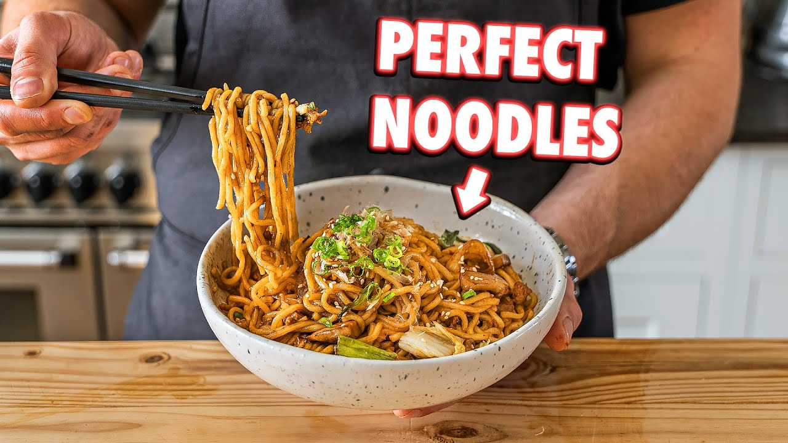

Yaki Udon

By Joshua Weissman
Homemade stir fry noodle recipes like yaki udon will be a revolutionary moment
for many people who are just about to start cooking, or already cooks. It's a weeknight and a weekend meal
Ingredients
Yaki Udon Noodle Sauce
- 2 tablespoons dark soy sauce -29g
- 2 tablespoons oyster sauce - 28g
- 1 tablespoon mirin - 14g
- 2 tablespoons shirodashi -24g
- 1 tablespoon rice wine vinegar -12g
- 1 teaspoon palm sugar - 35g
Yaki Udon Stir Fry
- 1 lb udon noodles
- 1 cup sliced baby trumpet mushrooms (Any mushroom will do)
- 1/2 sweet onion, sliced into 3/4 in thick julienned segments
- 1 cup rough chopped napa cabbage
- 3 green onions, cut into 1-inch segments
- 1/2 lb ground pork
- Salt to taste
- White pepper to taste
- Pinch of MSG
- 3 cloves garlic, finely chopped
- Chili oil for topping (optional)
- Bonito flakes for topping
- Toasted sesame seeds for topping
- Green onion, thin cut on a bias for topping
- Egg yolk or fried egg *optional*
Instructions
Yaki Udon Noodle Sauce
- Chop the palm sugar finely in a small bowl, add the rest of the ingredients, and whisk until the sugar dissolves.
Yaki Udon Stir Fry
- In a pot with boiled water lightly salted, cook your noodles for about 30 seconds, drain them, and run under cold water until cool. Mix them with a couple of teaspoons of sesame oil to keep them from sticking together. Set aside.
- To season your wok, pour a thin layer of oil to cover the bottom of the wok, give it a swirl, and heat it over high heat. Once it starts smoking, discard the rest of the oil, cut the heat, and wipe it down with a towel.
- Heat your wok with a touch of oil until hot, add the ground pork meat, press it down to get a bigger contact surface, and sear it for about 2 min. Then, flip it and sear for another minute. Next, begin to stir fry-chop the pork until most of the fat has rendered, and you get crispy bits—about two minutes. Remove and set aside.
- Add the duck fat (or vegetable oil); once it is hot, add the onion and the mushrooms, stir fry for about two minutes over high heat, or until soft and a dark brown color
- Add the cabbage and green onion, stir fry for one minute, until it begins to welt and get some color, but we still want some crunchiness; add the meat and the noodles, season with salt, white pepper, and a pinch of msg.
- Stir fry for about two minutes, add the Yaki Udon sauce and stir fry for one more minute. Once it is ready, cut up the heat and add the garlic. Toss it gently together to avoid breaking the noodles, and serve immediately.
- Garnish with bonito flakes, green onion, sesame seeds, and chili oil (optional)